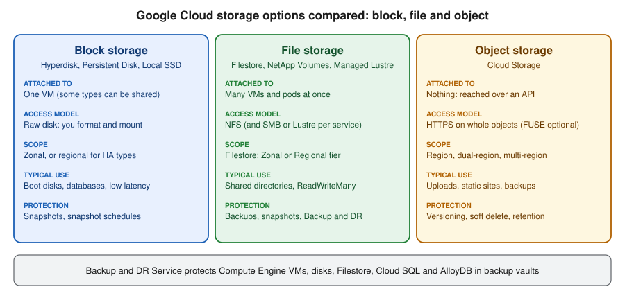

Block and File Storage on Google Cloud
|
This content was generated with the assistance of AI and should be verified against the official documentation before being relied on in production. |
Examples on this page target the gcloud CLI 586 (release 586.0.0 of 2026-09-22) and the Compute Engine, Filestore and
Backup and DR APIs, checked on 2026-10-01. Disk types, tiers and launch stages change often, so re-verify with
gcloud --version, gcloud compute disk-types list and the Compute Engine release notes
before relying on a specific value. Block storage is the part of Google Cloud that behaves like the disks you already
know: a block device is a raw disk that one VM formats and mounts (Hyperdisk, Persistent Disk and Local SSD), and a
file system is a shared directory tree that many clients mount over the network (Filestore, NetApp Volumes and
Managed Lustre). Object storage is a third model, covered in Cloud Storage. In the
Bookshelf scenario (described in the section introduction) the catalog-api
VMs from Compute Engine keep a data disk on Hyperdisk, while the report exports written
by orders-api pods on GKE (see Deploying Microservices on GKE) live on a shared Filestore instance.
my-project-id, us-central1 and us-central1-a are placeholders.

Choosing between the options
| Option | Access model | Scope and durability | Choose it when |
|---|---|---|---|
Hyperdisk |
Block device attached to a VM; some types can be shared between VMs |
Zonal; Balanced High Availability is replicated across two zones of a region |
New designs on the series that support it: boot and data disks, databases, tunable IOPS and throughput |
Persistent Disk |
Block device attached to a VM |
Zonal, or regional (replicated across two zones) |
Existing workloads and the series that only support Persistent Disk, such as E2 and N2 |
Local SSD |
Local NVMe disks in the host |
Lost when the VM stops, is suspended or the host fails |
Caches, scratch space, data that is replicated elsewhere |
Filestore |
NFS file system, many clients at once |
Zonal or Regional tier |
Shared content, home directories, |
NetApp Volumes |
NFS, SMB and block protocols from a managed NetApp service |
Regional pools with service levels |
Enterprise NFS and SMB shares, lift and shift of NetApp workloads |
Managed Lustre |
Lustre parallel file system |
Zonal, very high throughput |
AI training and high-performance computing |
Cloud Storage |
HTTPS API on whole objects |
Regional, dual-region or multi-region |
Uploads, static sites, backups, data lakes |
A practical rule for new designs: keep application state in managed services, treat VMs and pods as disposable, use Cloud Storage for files an application uploads and serves, and reach for a disk or a file system only when the software needs a real disk or a real shared directory. A zonal disk cannot be attached to a VM in another zone, so state that must survive a zone failure belongs on a regional disk, a Regional Filestore instance, or a managed database (see Managed Databases on Google Cloud).
Hyperdisk and Persistent Disk
Compute Engine offers two durable block-storage families. Hyperdisk is the current family: you provision capacity, IOPS and throughput separately, so performance can be raised without growing the disk. Persistent Disk is the previous family, where performance grows with the size of the disk. Both attach to running VMs without downtime, are encrypted at rest by default, and are billed for provisioned capacity from creation to deletion, including disks of stopped VMs and unattached disks. Newer machine series (C4, N4 and their relatives) support only Hyperdisk, while E2 and N2 still use Persistent Disk, so the series you pick narrows the choice (see Compute Engine).
Disk types
| Type | Key characteristics | Maximum per disk (documented) | Typical use |
|---|---|---|---|
Hyperdisk Balanced ( |
General purpose, independently provisioned IOPS and throughput; the recommended default |
160,000 IOPS, 2,400 MiB/s, 64 TiB |
Boot disks, most databases and enterprise applications |
Hyperdisk Balanced High Availability ( |
Synchronously replicated across two zones of a region |
100,000 IOPS, 2,400 MiB/s, 64 TiB |
Mission-critical workloads that must survive a zone outage |
Hyperdisk Extreme ( |
Highest IOPS |
350,000 IOPS, 5,000 MiB/s, 64 TiB |
Large databases such as SAP HANA |
Hyperdisk Throughput ( |
Optimised for bandwidth, not bootable |
9,600 IOPS, 2,400 MiB/s, 32 TiB |
Analytics, scans, cold data |
Hyperdisk ML ( |
Read-only after the data is loaded, attachable to thousands of VMs |
Very high aggregate throughput |
Distributing model weights and datasets to many accelerators |
Balanced Persistent Disk ( |
Performance scales with size |
Sizes from 10 GiB to 64 TiB |
Existing general-purpose disks on E2, N2 and similar |
SSD Persistent Disk ( |
Higher IOPS per GiB than Balanced |
Sizes from 10 GiB to 64 TiB |
Existing latency-sensitive disks |
Standard Persistent Disk ( |
Magnetic, lowest cost |
Sizes from 10 GiB to 64 TiB |
Sequential access and archives on supported series |
Extreme Persistent Disk ( |
Provisioned IOPS, previous generation |
Sizes from 500 GiB |
Existing workloads; prefer Hyperdisk Extreme |
The figures are the documented maximums on the pages linked below and also depend on the machine type, the number of
vCPUs and the disk size; always check the current limits before sizing. Hyperdisk and Extreme Persistent Disk also
charge for provisioned IOPS or throughput. Older guides and tutorials create pd-standard or pd-ssd disks and grow
them to buy IOPS; the current approach is Hyperdisk Balanced where the machine series supports it, with IOPS and
throughput set on their own. Hyperdisk also offers torn write protection for databases and storage pools, described
below.
See Choose a disk type and About Hyperdisk.
In the Google Cloud console
-
Select the project in the project picker at the top of the console. Open Compute Engine, which enables the Compute Engine API on first use.
-
Under Storage, choose Disks, then Create disk.
-
Enter the name
bookshelf-catalog-dataand choose the Disk source type Blank disk. -
Choose the Location Single zone and the zone of the VM that will use it (a zonal disk can attach only to VMs in its own zone). Choose Regional only for the High Availability and regional Persistent Disk types.
-
Choose the Disk type Hyperdisk Balanced, set the Size (for example 100 GiB), and keep or change the Provisioned IOPS and Provisioned throughput.
-
Under Encryption keep Google-managed encryption key, or choose a customer-managed key from Cloud KMS (see Secret Manager and Cloud KMS). Choose Create.
-
Open VM instances, select the VM, choose Edit, and under Additional disks choose Attach existing disk, pick the disk and Save.
-
Connect to the VM (browser SSH, or IAP TCP forwarding as in Compute Engine), then format and mount the disk with the commands in the CLI section.
-
To resize or retune later, open Disks, select the disk and choose Edit; then grow the file system inside the VM.
With the gcloud CLI
gcloud services enable compute.googleapis.com
export PROJECT_ID=$(gcloud config get-value project)
export REGION=us-central1
export ZONE=us-central1-a
export VM=catalog-api-1 # an existing VM in $ZONE
# Create a Hyperdisk Balanced data disk with explicit IOPS (per disk) and throughput (MiB/s)
gcloud compute disks create bookshelf-catalog-data \
--zone="$ZONE" \
--type=hyperdisk-balanced \
--size=100GB \
--provisioned-iops=3000 \
--provisioned-throughput=140 \
--labels=app=bookshelf,component=catalog-api
# Attach it to the running VM
gcloud compute instances attach-disk "$VM" \
--zone="$ZONE" \
--disk=bookshelf-catalog-data \
--device-name=catalog-dataSee gcloud compute disks create,
gcloud compute instances attach-disk and
Add a disk to a VM. The IOPS and throughput you
may request depend on the disk size and the machine type, and some values are rejected until the disk is large enough.
With --device-name=catalog-data the disk appears inside the VM as a stable symbolic link, so do not rely on the
kernel names such as /dev/sdb or /dev/nvme0n2:
ls -l /dev/disk/by-id/google-catalog-data # stable name for the disk
sudo mkfs.ext4 -m 0 -E lazy_itable_init=0,lazy_journal_init=0,discard \
/dev/disk/by-id/google-catalog-data # only for a new, empty disk
sudo mkdir -p /data
sudo mount -o discard,defaults /dev/disk/by-id/google-catalog-data /data
sudo blkid /dev/disk/by-id/google-catalog-data # use the UUID in /etc/fstab with the nofail optionTo change a disk without detaching it, resize it, retune it, and then grow the file system:
gcloud compute disks resize bookshelf-catalog-data --zone="$ZONE" --size=200GB
gcloud compute disks update bookshelf-catalog-data --zone="$ZONE" \
--provisioned-iops=6000 --provisioned-throughput=250
# Inside the VM: grow an ext4 file system to fill the disk
sudo resize2fs /dev/disk/by-id/google-catalog-dataSee gcloud compute disks resize,
gcloud compute disks update and
Increase the size of a disk. A disk can only
grow, never shrink, and Hyperdisk performance can be changed again only after a cool-down period. Disks created with a
VM can be deleted with it (auto-delete, which is on for boot disks and off for disks attached later), so decide
explicitly which data disks must outlive the VM.
The same disk as Terraform (the hashicorp/google provider; see Infrastructure as Code):
resource "google_compute_disk" "catalog_data" {
name = "bookshelf-catalog-data"
type = "hyperdisk-balanced"
zone = "us-central1-a"
size = 100
provisioned_iops = 3000
provisioned_throughput = 140
labels = {
app = "bookshelf"
component = "catalog-api"
}
}See google_compute_disk.
Regional and high availability disks
A zonal disk is lost with its zone. Two options replicate a disk across two zones of one region, so a replacement VM in the surviving zone can take it over (a force attach is needed when the failed VM cannot release it):
-
Hyperdisk Balanced High Availability is the current choice, with synchronous replication, and it can be multi-attached to VMs in the two zones for clustered software.
-
Regional Persistent Disk (
pd-balancedorpd-ssdwith--regionand--replica-zones) does the same for the older series.
gcloud compute disks create bookshelf-catalog-ha \
--region="$REGION" \
--replica-zones=us-central1-a,us-central1-b \
--type=hyperdisk-balanced-high-availability \
--size=100GBSee Regional Persistent Disk and HA disks and Hyperdisk Balanced High Availability. Replication protects against a zone outage, not against deleting or corrupting data, so keep snapshots as well.
Storage pools and asynchronous replication
A Hyperdisk storage pool is a block of capacity and performance that you buy once and share among many Hyperdisk
volumes in a zone, which lowers cost when disks are over-provisioned for peaks. A pool is created with
gcloud compute storage-pools create, and a disk joins it with --storage-pool at creation. Asynchronous
replication keeps a secondary disk in another region in step with a primary one for disaster recovery, with a
recovery point objective of minutes rather than zero:
# Creating the secondary disk in another region, pointing at the primary, starts replication
gcloud compute disks create bookshelf-catalog-data-dr \
--zone=us-east1-b \
--type=hyperdisk-balanced \
--size=100GB \
--primary-disk=bookshelf-catalog-data \
--primary-disk-zone="$ZONE" \
--primary-disk-project="$PROJECT_ID"Derived from Configure asynchronous replication.
See About Hyperdisk Storage Pools and
Asynchronous Replication for Hyperdisk and Persistent Disk.
The prerequisites (matching disk type and size, and the replication state machine) are in those pages; use
gcloud compute disks stop-async-replication before deleting either side.
Local SSD
Some machine series can attach Local SSD disks: NVMe devices physically inside the host that offer very high IOPS and
low latency. Their data is lost if the VM is stopped, suspended or the host fails (a reboot keeps it), so use them for
caches, buffers and scratch space, and for data that the cluster software replicates by itself, never for the only
copy of anything. They cannot be boot disks and cannot be snapshotted. Add them when creating the VM with the
--local-ssd=interface=NVME option (see Compute Engine), and format and mount them in a
startup script on every boot.
Snapshots
A snapshot is an incremental copy of a disk. The first snapshot copies all written blocks and later ones store only the blocks that changed, but each snapshot can be restored on its own. There are three kinds:
| Kind | What it is |
|---|---|
Standard snapshot |
The default. Stored redundantly outside the disk’s zone, survives the deletion of the source disk, can be restored in any region by default, and can be scheduled. |
Archive snapshot |
A lower-cost snapshot for data kept for months or years and rarely restored, with a longer restore time and a minimum retention period. Cannot be created by a schedule, and deleting one is permanent. |
Instant snapshot |
A fast, local, zone-scoped snapshot with the best recovery time, deleted automatically with the source disk. Use it for quick rollbacks before an upgrade, not for backup, and it cannot be scheduled. |
Standard and archive snapshots are global resources, and a regionally scoped snapshot (Preview at the time of checking) keeps data and metadata inside one region for data residency. A recycle bin for deleted standard snapshots, which keeps them for a few days so an accidental deletion can be undone, is also in Preview, so do not depend on it for production recovery. Snapshots are encrypted like disks, and a snapshot of a disk encrypted with a customer-managed key stays tied to that key.
In the Google Cloud console
-
Open Compute Engine, then Storage, then Snapshots, and choose Create snapshot.
-
Name it
bookshelf-catalog-data-pre-upgrade, choose the Source disk, and choose the Snapshot type: Snapshot (standard) or Archive snapshot. -
Under Location keep Multi-regional (for example
us) or choose a single region, then Create. Choose Instant snapshots in the same menu for the fast local kind. -
To schedule, open Snapshots, then Snapshot schedules, choose Create snapshot schedule, pick the region, frequency, start time and retention, and decide what happens to auto-created snapshots when the disk is deleted.
-
To attach the schedule, open Disks, select the disk, choose Edit and set the Snapshot schedule.
With the gcloud CLI
# A standard snapshot, stored in the multi-region "us"
gcloud compute snapshots create bookshelf-catalog-data-pre-upgrade \
--source-disk=bookshelf-catalog-data \
--source-disk-zone="$ZONE" \
--storage-location=us \
--description="before upgrade"
# An archive snapshot for long retention
gcloud compute snapshots create bookshelf-catalog-data-archive-2026 \
--source-disk=bookshelf-catalog-data \
--source-disk-zone="$ZONE" \
--snapshot-type=ARCHIVE \
--storage-location=us
# An instant snapshot in the disk's own zone
gcloud compute instant-snapshots create bookshelf-catalog-data-instant \
--source-disk=bookshelf-catalog-data \
--zone="$ZONE"
gcloud compute snapshots list \
--filter="name~^bookshelf" \
--format="table(name,diskSizeGb,snapshotType,status,storageLocations.list())"See gcloud compute snapshots create,
gcloud compute instant-snapshots create and
Create disk snapshots. Snapshotting a disk while the
file system is busy gives a crash-consistent copy; for databases, flush and freeze the file system first (fsfreeze),
or use the Backup and DR Service for application-consistent backups.
A schedule takes standard snapshots automatically and expires them after a retention period:
gcloud compute resource-policies create snapshot-schedule bookshelf-daily \
--region="$REGION" \
--max-retention-days=14 \
--on-source-disk-delete=keep-auto-snapshots \
--daily-schedule --start-time=02:00 \
--storage-location=us
gcloud compute disks add-resource-policies bookshelf-catalog-data \
--zone="$ZONE" --resource-policies=bookshelf-dailyRestore a VM or a single file from a snapshot
You do not restore a snapshot over the live disk. You create a new disk from the snapshot, and then either boot a VM from it, attach it to a VM, or mount it read-only to recover individual files.
# 1. Create a disk from the snapshot (the disk can be in any zone; the type can differ from the original)
gcloud compute disks create bookshelf-catalog-restored \
--zone="$ZONE" \
--source-snapshot=bookshelf-catalog-data-pre-upgrade \
--type=hyperdisk-balanced
# 2a. Restore a whole VM: create it with the restored disk as its boot disk
# (use this when the snapshot was taken of a boot disk)
gcloud compute instances create catalog-api-restored \
--zone="$ZONE" \
--disk=name=bookshelf-catalog-restored,boot=yes,auto-delete=yes
# 2b. Recover a single file: attach the new disk to a recovery VM, mount it read-only, copy the file
gcloud compute instances attach-disk "$VM" --zone="$ZONE" \
--disk=bookshelf-catalog-restored --device-name=restore
sudo mkdir -p /restore
sudo mount -o ro,noload /dev/disk/by-id/google-restore /restore # noload skips journal replay on ext4
cp /restore/exports/orders-2026-09.csv /data/exports/
sudo umount /restore
# 3. Remove the temporary disk
gcloud compute instances detach-disk "$VM" --zone="$ZONE" --disk=bookshelf-catalog-restored
gcloud compute disks delete bookshelf-catalog-restored --zone="$ZONE" --quietSee Restore a snapshot,
gcloud compute instances create and
gcloud compute instances detach-disk.
In the console, choose Snapshots, select the snapshot, and choose Create disk (or Create instance for a VM from
a boot-disk snapshot). A snapshot of a boot disk can also be turned into a reusable image, which is the better route
when you will start many VMs from it. A snapshot used by a snapshot schedule or an image cannot be deleted while that
resource depends on it.
Backup and DR Service
Snapshots protect a disk. The Backup and DR Service protects whole workloads with central policy: it backs up Compute Engine VMs and disks, Filestore instances, Cloud SQL (MySQL, PostgreSQL and SQL Server) and AlloyDB, as well as selected self-managed databases. Backups are application-consistent where the workload supports it, and they live in a backup vault, an isolated, Google-managed store that is the security boundary for immutable and indelible backups (a minimum enforced retention can be set so that nobody, including administrators, can delete a backup early). A backup plan defines the rules (frequency, backup window and retention) and links protected resources to a vault. The service has its own API and billing, so enable it first and follow the concepts page before choosing between it and plain snapshot schedules: schedules are enough for simple disk recovery, and Backup and DR is the choice for compliance-driven retention and ransomware resilience.
In the Google Cloud console
-
Open Backup and DR (search for it in the console search bar) and enable the API when prompted.
-
Choose Backup vaults, then Create backup vault: name
bookshelf-vault, a location, and a minimum enforced retention period. -
Choose Backup plans, then Create backup plan: pick the resource type (for example Compute Engine instance), the vault, and one or more rules with a schedule and a retention.
-
Open the VM in Compute Engine, choose Backup and DR (or use the Backup and DR page, Protect), and assign the plan to the resource.
-
Use Backup and DR, then Backups, to restore a VM, a disk or individual files into a new resource.
With the gcloud CLI
gcloud services enable backupdr.googleapis.com
# A backup vault that refuses deletion of backups for the first 7 days
gcloud backup-dr backup-vaults create bookshelf-vault \
--location="$REGION" \
--backup-min-enforced-retention=7d \
--description="Bookshelf backups"
gcloud backup-dr backup-vaults list --location="$REGION"See gcloud backup-dr backup-vaults create
and Backup and DR concepts. Backup plans
and plan associations are created with the gcloud backup-dr backup-plans and gcloud backup-dr backup-plan-associations
command groups; check --help there, since flags differ per resource type. A vault that still holds backups
cannot be deleted, which is why the clean-up order below ends with the vault.
Filestore
Filestore is a managed NFS file server. A client mounts a share over NFSv3 or NFSv4.1, and many VMs, GKE pods and on-premises machines connected by VPN or Interconnect can use it at once. It is POSIX-style (users, groups, permissions, locks), so it is the right answer when software needs a shared directory, and a poor answer for uploads served over HTTP, which belong in Cloud Storage.
| Tier | What it means |
|---|---|
Zonal |
High performance in one zone, aimed at HPC and localised workloads. Capacity in 256 GiB steps from 1 TiB, and larger instances up to 100 TiB. Not resilient to the loss of the zone. |
Regional |
Replicated across zones of a region, for resilience to a zone outage. Capacity from 100 GiB (small instances are limited to a few regions) up to 100 TiB. |
Enterprise |
An alias for Regional kept for older scripts; the Multishares feature for GKE, which carves many small shares out of one Enterprise instance, is built on it. |
Basic HDD and Basic SSD |
Legacy zonal tiers with fixed performance. Existing instances keep working; use Zonal or Regional for new ones. |
All tiers support backups, snapshots and replication, with capacity and performance that can be scaled after
creation within the limits of the tier. Older guides and tutorials create BASIC_HDD or BASIC_SSD instances and
STANDARD/PREMIUM tiers; the current approach is ZONAL or REGIONAL. Do not confuse Filestore (file storage)
with Firestore (a document database, see Spanner, Firestore and Bigtable); the names
differ by two letters and the services have nothing in common.
In the Google Cloud console
-
Open Filestore (under Storage) and enable the Cloud Filestore API when prompted.
-
Choose Create instance. Name it
bookshelf-exports, choose the Service tier (Regional for the Bookshelf exports, or Zonal for cost and speed), the Location, and the VPC network the clients use. -
Set the File share name (for example
exports) and the Capacity, and choose the Access controls: the IP ranges that may mount the share and whether root squash applies. -
Choose Create. Creation can take from several minutes to an hour for large instances.
-
Open the instance and choose Connect for the exact mount command with the instance IP address.
With the gcloud CLI
gcloud services enable file.googleapis.com
export NETWORK=default
gcloud filestore instances create bookshelf-exports \
--location="$REGION" \
--tier=REGIONAL \
--file-share=name=exports,capacity=1TiB \
--network=name="$NETWORK" \
--labels=app=bookshelf
# The mount address is in the IP address and share name of the instance
gcloud filestore instances describe bookshelf-exports --location="$REGION" \
--format="value(networks[0].ipAddresses[0])"See gcloud filestore instances create and
Create instances. Some tiers and capacities are only
offered in certain locations, and a Filestore instance needs private services access (or Private Service Connect) on
the VPC network; the create command tells you when that is missing. Mount it from a VM that can reach the instance:
sudo apt-get install -y nfs-common # Debian and Ubuntu; use nfs-utils on Red Hat family
sudo mkdir -p /mnt/exports
sudo mount -o rw,intr FILESTORE_IP:/exports /mnt/exports # FILESTORE_IP from the describe command
echo 'FILESTORE_IP:/exports /mnt/exports nfs defaults,_netdev,nofail 0 0' | sudo tee -a /etc/fstabSee Mount file shares on Compute Engine VMs.
Capacity can be raised later with gcloud filestore instances update bookshelf-exports --location="$REGION"
--file-share=name=exports,capacity=2TiB, and backups are created with gcloud filestore backups create or, centrally,
with the Backup and DR Service above. In Terraform:
resource "google_filestore_instance" "exports" {
name = "bookshelf-exports"
location = "us-central1"
tier = "REGIONAL"
file_shares {
name = "exports"
capacity_gb = 1024
}
networks {
network = "default"
modes = ["MODE_IPV4"]
}
}Persistent disks and Filestore on GKE
GKE ships CSI drivers that turn both services into Kubernetes volumes (the generic concepts of PersistentVolume,
PersistentVolumeClaim and StorageClass are covered in the Kubernetes pages of this site; here only the Google Cloud
parts are shown). The Compute Engine persistent disk CSI driver is enabled on every cluster and provisions Hyperdisk
and Persistent Disk volumes, which are ReadWriteOnce (one node at a time). The Filestore CSI driver is enabled by
default on Autopilot clusters, must be switched on for Standard clusters, and provisions ReadWriteMany volumes that
many pods can share.
# Standard clusters only: enable the Filestore CSI driver (Autopilot has it on already)
gcloud container clusters update bookshelf-gke --region="$REGION" \
--update-addons=GcpFilestoreCsiDriver=ENABLEDSee Access Filestore instances with the Filestore CSI driver.
Once enabled, GKE installs ready-made storage classes such as zonal-rwx, enterprise-rwx,
enterprise-multishare-rwx, standard-rwx and premium-rwx; list them with kubectl get storageclass. A custom
Hyperdisk class and a shared claim for the Bookshelf exports look like this:
apiVersion: storage.k8s.io/v1
kind: StorageClass
metadata:
name: hyperdisk-balanced-retain
provisioner: pd.csi.storage.gke.io
parameters:
type: hyperdisk-balanced
provisioned-iops-on-create: "3000"
provisioned-throughput-on-create: "140Mi"
reclaimPolicy: Retain
volumeBindingMode: WaitForFirstConsumer
allowVolumeExpansion: true
---
apiVersion: v1
kind: PersistentVolumeClaim
metadata:
name: orders-exports
spec:
accessModes: ["ReadWriteMany"]
storageClassName: zonal-rwx
resources:
requests:
storage: 1TiSee Provision and use Hyperdisk volumes
and About persistent volumes. The
orders-api Deployment then mounts the claim at the directory the application is configured to write to:
apiVersion: apps/v1
kind: Deployment
metadata:
name: orders-api
spec:
replicas: 2
selector:
matchLabels:
app: orders-api
template:
metadata:
labels:
app: orders-api
spec:
containers:
- name: orders-api
image: us-central1-docker.pkg.dev/my-project-id/bookshelf/orders-api:1.0.0
env:
- name: BOOKSHELF_EXPORTS_DIR
value: /mnt/exports
volumeMounts:
- name: exports
mountPath: /mnt/exports
volumes:
- name: exports
persistentVolumeClaim:
claimName: orders-exportsSee Volumes in GKE and
Deploying Microservices on GKE for the rest of the Bookshelf manifests. The minimum Filestore
capacity of a zonal-rwx claim is large (1 TiB at the time of checking), so for many small per-pod volumes use the
Multishares feature (enterprise-multishare-rwx) or, better, store the data in Cloud Storage.
Application code
The application does not need to know that the directory is a Filestore share: it writes plain files to a configured path. A Spring Boot setting and a small component are enough, and the cloud-neutral treatment of file systems and object stores, including when not to write local files at all, is in File Storage & Object Stores:
package com.example.bookshelf.orders;
import java.io.IOException;
import java.nio.file.Files;
import java.nio.file.Path;
import java.nio.file.StandardCopyOption;
import org.springframework.beans.factory.annotation.Value;
import org.springframework.stereotype.Component;
@Component
public class ExportWriter {
private final Path exportsDir;
public ExportWriter(@Value("${bookshelf.exports.dir:/mnt/exports}") Path exportsDir) {
this.exportsDir = exportsDir;
}
/** Writes the file under a temporary name and renames it, so readers never see a partial export. */
public Path write(String name, byte[] content) throws IOException {
Files.createDirectories(exportsDir);
Path temp = Files.createTempFile(exportsDir, name, ".part");
Files.write(temp, content);
return Files.move(temp, exportsDir.resolve(name), StandardCopyOption.ATOMIC_MOVE);
}
}bookshelf:
exports:
dir: ${BOOKSHELF_EXPORTS_DIR:/mnt/exports}No credentials are involved, because access to the share is controlled by the network (VPC and the allowed client ranges) and by POSIX permissions. See Filestore access control.
NetApp Volumes and Managed Lustre
Two further file services exist for specialised needs, and both get only a short description here:
-
Google Cloud NetApp Volumes is a managed NetApp service that serves NFS (versions 3, 4.1 and 4.2) and SMB (2.1 to 3.1.1) volumes, with block protocols (iSCSI and NVMe/TCP) available in some modes. Choose it for enterprise NFS and SMB shares, Windows file servers, SAP shared files, VMware Engine datastores and disaster recovery targets, where Filestore lacks the protocol or the NetApp data-management features. Capacity pools come in service levels (Flex Unified, Standard, Premium and Extreme); the older Flex File level is being phased out for new pools.
-
Google Cloud Managed Lustre is a managed Lustre parallel file system, built with the Lustre maintainers, for AI training and high-performance computing where many compute nodes read and write the same data at very high throughput. It is POSIX-compliant and mounted with the Lustre client, and it is the recommended option for these workloads. Parallelstore, Google’s earlier DAOS-based parallel file system, may appear in older material, but as of 2026-10-01 its documentation and product page redirect to Managed Lustre, so use Managed Lustre for new designs.
Neither is needed for the Bookshelf scenario. See NetApp Volumes overview and Managed Lustre overview.
Pricing model and cost drivers
This page lists no prices because they differ by region and change; use the dated pricing pages linked in the references and the pricing calculator.
-
Disks: GiB-month of provisioned size for every disk, attached or not and including the disks of stopped VMs; for Hyperdisk, also provisioned IOPS and throughput above the free baseline for the type. Unattached disks and forgotten snapshots are the classic waste. Storage pools bill the pool, not the individual disks.
-
Local SSD: per GiB of the local disks while the VM exists.
-
Snapshots: GiB-month of stored (incremental) data by kind, with archive snapshots cheaper to keep and more expensive to read, and instant snapshots billed on the changed data they hold. Network egress applies when a snapshot is stored or restored across regions.
-
Filestore: GiB-month of provisioned capacity by tier (you pay for what you provision, not what you use), plus backups and replication.
-
Backup and DR: protected data and backup storage in the vault, per resource type.
-
NetApp Volumes and Managed Lustre: provisioned pool or file system capacity, plus throughput and backups.
-
Data transfer between zones and regions applies when a client in one zone reaches a Filestore instance or a disk replica in another, so keep clients in the zone of a Zonal instance.
There is no Always Free allowance for disks or Filestore on the free tier at the time of checking, apart from what the free trial credit covers (see Getting Started with Google Cloud). See Disk and image pricing and Filestore pricing.
Limits and quotas
-
Disks: each VM can attach a limited number of disks and a maximum total capacity that depend on the machine series (for Persistent Disk up to 127 secondary zonal disks per VM at the time of checking), and each VM has an aggregate IOPS and throughput limit that can be lower than the sum of its disks. A zonal disk is limited to 64 TiB (32 TiB for Hyperdisk Throughput).
-
Regional quotas cover the total Hyperdisk and Persistent Disk capacity per type (
HYPERDISK_BALANCED_TOTAL_GBand similar), the number of disks, snapshots, and storage pools. Raise them from IAM and admin, Quotas and system limits. -
Filestore: quotas per region on the capacity of each tier and the number of instances; instances are limited per VPC network and require a free IP range for private services access.
-
Check current values on the quota pages linked in the references rather than hard-coding them.
gcloud compute project-info describe --format="table(quotas.metric,quotas.usage,quotas.limit)" \
| grep -E "DISK|SNAPSHOT"
gcloud compute regions describe "$REGION" \
--format="table(quotas.metric,quotas.usage,quotas.limit)" | grep -E "DISK|SSD|HYPERDISK"Recent changes and where older guides are outdated
| Older guides and tutorials | Current approach |
|---|---|
|
Hyperdisk, with capacity, IOPS and throughput provisioned separately; Persistent Disk only on the series that still require it |
One zonal disk and a manual failover runbook |
Hyperdisk Balanced High Availability or regional Persistent Disk for zone resilience, plus asynchronous replication for cross-region recovery |
Only full or standard snapshots |
Standard, archive and instant snapshots, schedules for standard ones, and a recycle bin for deleted snapshots (Preview) |
A cron job that snapshots each disk |
Snapshot schedules or Backup and DR backup plans in a backup vault |
Filestore Basic HDD and Basic SSD, or |
Filestore Zonal and Regional tiers, with Basic kept as a legacy option |
Mount a Cloud Storage bucket with a third-party tool for file semantics |
Cloud Storage FUSE, supported by Google, or the GKE CSI driver for it (see Cloud Storage) |
A self-managed NetApp or Lustre appliance on Compute Engine |
NetApp Volumes and Managed Lustre as managed services |
Kernel device names such as |
Stable |
Troubleshooting
| Symptom | Likely cause | Check |
|---|---|---|
|
A zonal disk and the VM are in different zones |
|
The disk is attached but no data disk is visible |
It is not formatted or mounted, or the device name differs |
|
A larger disk but the same file system size |
The file system was not grown after |
|
The request for IOPS or throughput is rejected |
The value is outside what the disk size and machine type allow |
The limits table of the Hyperdisk page, then a larger disk or machine type |
|
The snapshot is still being created or is in another location policy |
|
A VM does not boot after restoring a disk |
The snapshot was of a data disk, or |
Serial console output, |
The VM stalls at boot waiting for a disk |
An |
Add |
|
A firewall rule blocks NFS, the client is outside the allowed ranges, or the VPC lacks private services access |
Firewall rules on the VPC, the instance access controls, |
|
POSIX user differs from the owner, or root squash is on |
|
Create Filestore fails with a quota error |
Regional capacity quota or no free private services range |
|
A PVC stays |
The CSI driver is not enabled, the class name is wrong, or the capacity is below the tier minimum |
|
A backup job fails |
The Backup and DR service agent lacks permission on the resource or key |
Job status in Backup and DR, IAM bindings of the service agent |
gcloud compute disks describe bookshelf-catalog-data --zone="$ZONE" \
--format="table(name,type.basename(),sizeGb,provisionedIops,status,users.basename())"
gcloud compute snapshots describe bookshelf-catalog-data-pre-upgrade --format="value(status,storageBytes)"
gcloud filestore instances list --format="table(name,tier,state,fileShares[0].capacityGb)"
kubectl describe pvc orders-exportsSee Troubleshoot disks and Troubleshoot Filestore.
Clean up
Delete in dependency order. Disks and snapshots keep billing after the VM is gone, a disk cannot be deleted while it is attached, a Filestore instance cannot be deleted while it still has snapshots or backups, and a backup vault cannot be deleted while it holds backups.
# 1. Kubernetes objects first, so the CSI driver can release the volumes
kubectl delete deployment orders-api
kubectl delete pvc orders-exports
# 2. Disks: detach, then delete (a snapshot schedule must be removed from the disk before it is deleted)
gcloud compute disks remove-resource-policies bookshelf-catalog-data --zone="$ZONE" \
--resource-policies=bookshelf-daily
gcloud compute instances detach-disk "$VM" --zone="$ZONE" --disk=bookshelf-catalog-data
gcloud compute disks delete bookshelf-catalog-data --zone="$ZONE" --quiet
gcloud compute resource-policies delete bookshelf-daily --region="$REGION" --quiet
# 3. Snapshots
gcloud compute snapshots delete bookshelf-catalog-data-pre-upgrade bookshelf-catalog-data-archive-2026 --quiet
gcloud compute instant-snapshots delete bookshelf-catalog-data-instant --zone="$ZONE" --quiet
# 4. Filestore (unmount clients first, delete backups before the instance)
sudo umount /mnt/exports
gcloud filestore instances delete bookshelf-exports --location="$REGION" --quiet
# 5. Backup and DR: delete backups (after the retention period), then the vault
gcloud backup-dr backup-vaults delete bookshelf-vault --location="$REGION"See gcloud compute disks delete,
gcloud compute snapshots delete and
gcloud filestore instances delete.
A Hyperdisk or Persistent Disk with reclaimPolicy: Retain outlives its claim and must be deleted by hand. A backup
vault with a minimum enforced retention keeps its backups until that period ends, so the vault deletion succeeds only
afterwards. In the console: Compute Engine, Disks, Delete; Snapshots, Delete; Filestore, select the
instance, Delete; Backup and DR, Backup vaults, Delete. If you created the resources from a Terraform
configuration, terraform destroy removes them in the right order. The simplest and most complete clean-up for a
tutorial project is to delete the whole throwaway project (see Resource Hierarchy and Projects).
Related pages
-
Compute Engine for VMs, machine series, images and instance templates that attach these disks.
-
Cloud Storage for object storage, storage classes, lifecycle rules and Cloud Storage FUSE.
-
Secret Manager and Cloud KMS for the Cloud KMS keys used to encrypt disks, snapshots and Filestore.
-
GKE Clusters and Deploying Microservices on GKE for mounting volumes in pods.
-
Managed Databases on Google Cloud for databases that replace self-managed data disks.
-
Architecture, Migration and Multicloud for disaster recovery and migration of file workloads.
-
File Storage & Object Stores for the cloud-neutral treatment of file systems and object stores in Spring Boot.
-
Azure and Block and File Storage on AWS for the Azure and AWS counterparts (managed disks and Azure Files, EBS and EFS).